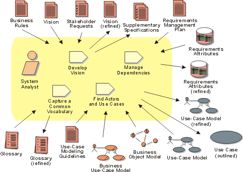

Disciplines >
Requirements >
Disciplines >
Requirements >
 Workflow >
Define the System
Workflow >
Define the System
Disciplines >
Requirements >
Workflow >
Define the System
Workflow Detail:
|
Topics |
 |
The purpose of this workflow detail is to:
Problem Analysis and activities for Understanding Stakeholder Needs create early iterations of key system definitions, including the features defined in the Vision document, a first outline to the use-case model and the Requirements Attributes. In Defining the System you will focus on identifying actors and use cases more completely, and expand the global non-functional requirements as defined in the Supplementary Specifications.
If you have developed a business use-case model and business object model, see also Guidelines: Going from Business Models to Systems for more guidance.
Typically, this is primarily performed in iterations during the inception and elaboration phases, however it may be revisited as needed when managing scope and responding to changing requirements, as well as other changing conditions.
All members of the project team should participate.
The following are sample techniques that can be applied:
See also:
|
Rational Unified
Process
|